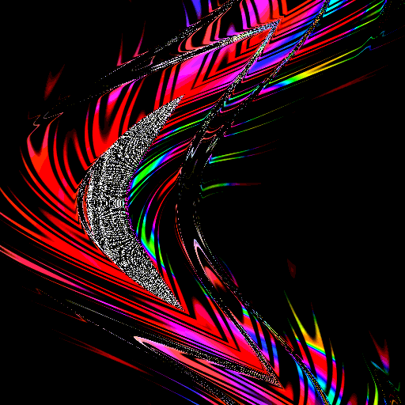
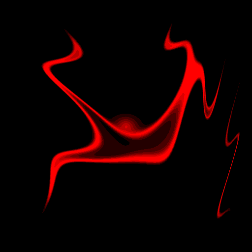
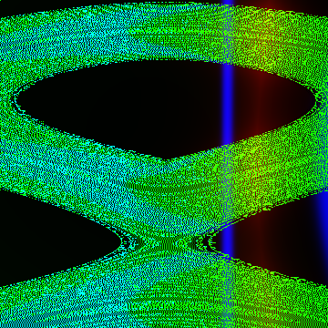
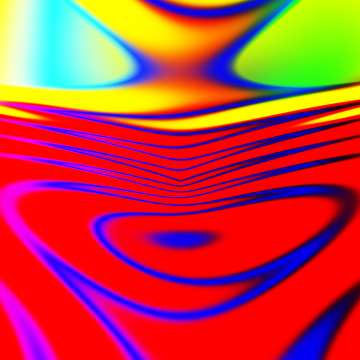
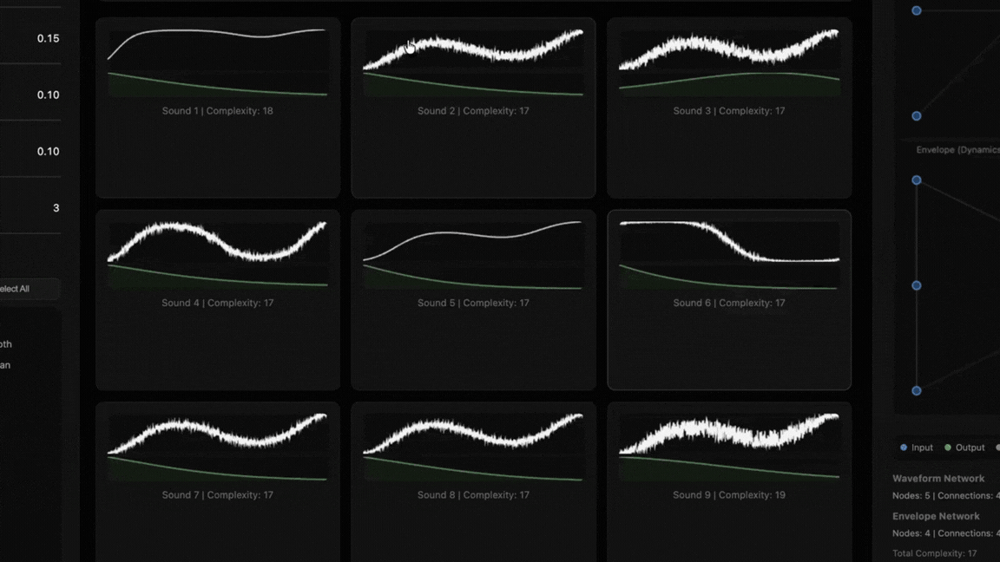

Research



GIFBreeder
Interactive Platform
Adding a time variable to Picbreeder brings images to life.
Web App



Picbreeder
Interactive Platform
My take on Picbreeder!
Web App

Side Quest
Interactive Platform
Picbreeder + LLMs.
Beta


"AblOEh"
Interactive Platform
Neuroevolutionary dress design.
Web App

Synthbreeder
Interactive Platform
Breed synthesizer sounds.
Web App

BOIDS + Dynamic Perception Delay
Interactive Demo
How does collective behavior emerge from simple local rules?
Web App
Previously
RESEARCH
Spectral Bias & Saddle Points
Is spectral bias correlated to saddle point drops in the loss landscape?
PAPER
Continuum of Algorithms
How does the brain compute physical reasoning?
VISUAL
C. Elegans Connectome
What does the connectome look like on a 3D plane?
STARTUP
Zyntora
Can we make a virtual real estate social media app?